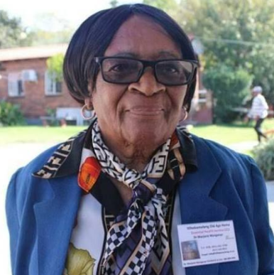
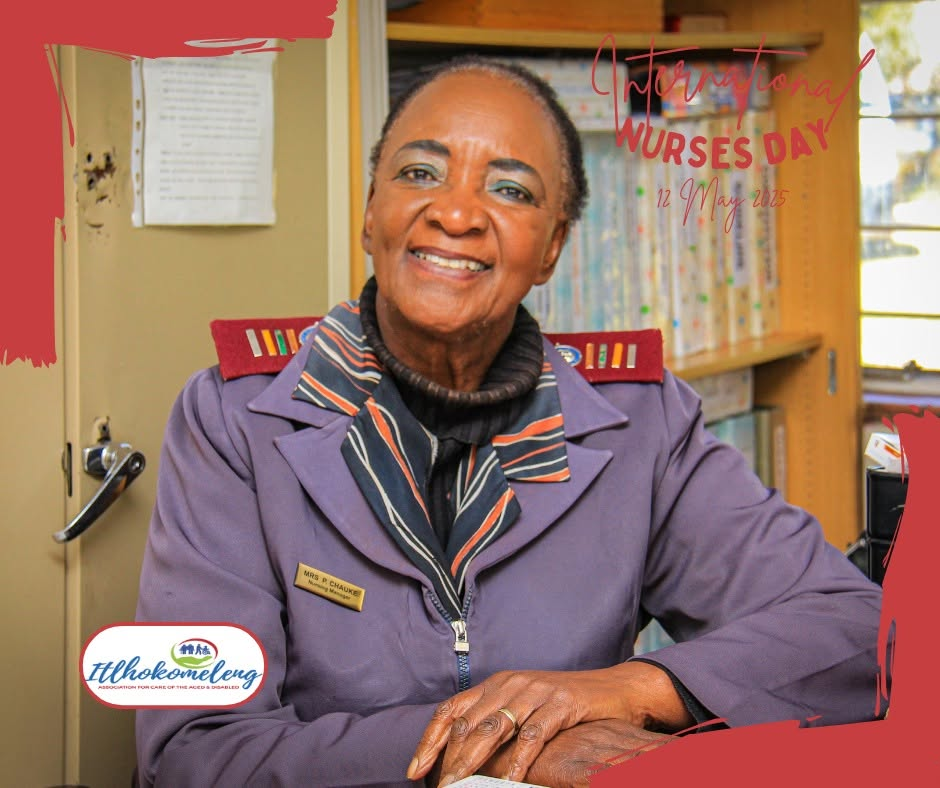

Dr Marjorie Manganye
Founder: oversees programmes and community partnerships. Dr Marjorie was honoured by Wits University for being "mother Theresa of Alexandra" in 2017. She is currently 93 years old.
Itlhokomeleng Association for Aged & Disabled is a community-based non-profit organisation that supports older persons and persons with disabilities. We provide home-based care, social support, and advocacy to help people live with dignity and inclusion in their communities. It was founded by the enigmatic Marjorie Manganye, who at 93 is still the head lady in charge and as sprightly as ever, and known as “The Mother Theresa of Alex”
A journey of compassion, community and commitment to caring for others.

Founder of Itlhokomeleng
The story of Itlhokomeleng began in 1978 in Alexandra, Johannesburg, through the compassion and determination of Dr Marjorie Manganye and a group of concerned women who recognised the need to support elderly and vulnerable members of their community.
What started as a community initiative to assist older people and those in need gradually grew into an organisation dedicated to providing care, support and a sense of belonging to people who might otherwise be neglected.
In 1984, Itlhokomeleng was officially registered as a welfare organisation. In 1988, with support from the Sandton Rotary Club and Anglo American, land was acquired and temporary accommodation was established for elderly residents. This development eventually led to a permanent home and the establishment of the Marjorie Manganye Frail-Care Centre.
The organisation's commitment also extended to people living with disabilities, strengthening its role as an important community support institution in Alexandra.
Over the years, Itlhokomeleng has become associated with residential care, community outreach and initiatives that encourage social connection, creativity and participation among older people.
At the heart of this journey is the dedication of Dr Marjorie Manganye, whose lifelong service to vulnerable people earned her an honorary doctorate from the University of the Witwatersrand in 2017.
A community initiative was started to support elderly and vulnerable people in Alexandra.
Itlhokomeleng was officially registered as a welfare organisation.
Land was acquired and temporary accommodation was established with the support of partners.
Founder Dr Marjorie Manganye received an honorary doctorate from Wits University in recognition of her service to the community.
"Itlhokomeleng" means "Help Yourselves" — a name that reflects the spirit of community, self-reliance, dignity and mutual support.
To provide compassionate care, dignity, support and meaningful assistance to elderly and Disabled people while contributing positively to the Alexandra community.
To create a caring and supportive community where elderly and disabled people are respected, protected and able to live with dignity.

Founder: oversees programmes and community partnerships. Dr Marjorie was honoured by Wits University for being "mother Theresa of Alexandra" in 2017. She is currently 93 years old.

Nursing manager and long-standing board member (since 1996) and retired nurse..